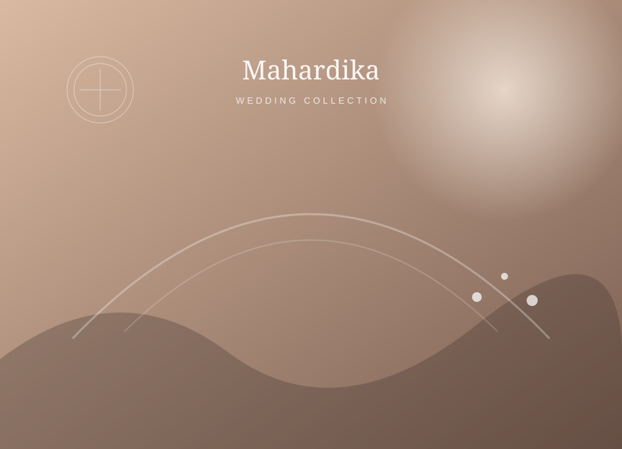

Wedding Planning
Konsep, timeline, budget planning dan koordinasi seluruh kebutuhan acara.
Konsultasikan →WEDDING PLANNER • DECORATION • STUDIO
Kami merancang pernikahan yang terasa personal, elegan, dan penuh momen yang ingin Anda kenang selamanya.
MAHARDIKA WEDDING
Setiap pasangan punya cerita berbeda. Karena itu kami memulai dari percakapan sederhana: apa yang Anda impikan, siapa yang ingin Anda bahagiakan, dan suasana seperti apa yang ingin Anda rasakan di hari H.
Dari sana, kami menyusun konsep, detail dekorasi, vendor, timeline, hingga koordinasi acara agar Anda bisa menikmati momen tanpa harus memikirkan hal-hal kecil.
LAYANAN KAMI
Solusi wedding yang fleksibel untuk acara intimate hingga celebration yang lebih besar.
Konsep, timeline, budget planning dan koordinasi seluruh kebutuhan acara.
Konsultasikan →Pelaminan, aisle, table styling, welcome area dan detail dekorasi sesuai tema.
Konsultasikan →Foto dan video untuk menangkap detail, emosi dan cerita sepanjang hari.
Konsultasikan →Tim yang memastikan rundown, vendor dan flow acara berjalan sesuai rencana.
Konsultasikan →
OUR STYLE
Palet natural, tekstur lembut dan detail yang tidak berlebihan menjadi salah satu arah visual Mahardika. Namun setiap konsep tetap bisa dibuat berbeda sesuai karakter pasangan.
PAKET PILIHAN
Harga di bawah adalah draft tampilan. Nilai final disesuaikan dengan konsep, tanggal dan kebutuhan acara.
INTIMATE
Untuk pasangan yang membutuhkan bantuan pada dekorasi dan koordinasi inti.
MOST POPULAR
Perencanaan lebih lengkap dengan dekorasi dan pendampingan vendor.
FULL SERVICE
Untuk pasangan yang ingin seluruh detail acara ditangani bersama tim.
“
Konsepnya cantik, prosesnya terasa tenang, dan di hari H kami bisa benar-benar menikmati acara.
— A & R · Wedding Celebration
HOW IT WORKS
Ceritakan tanggal, lokasi dan kebutuhan Anda.
Kami hubungi untuk memahami konsep dan budget.
Detail layanan, dekorasi dan timeline disusun bersama.
Tim Mahardika membantu memastikan acara berjalan lancar.
READY WHEN YOU ARE
Booking konsultasi sekarang dan dapatkan rancangan awal sesuai kebutuhan acara.